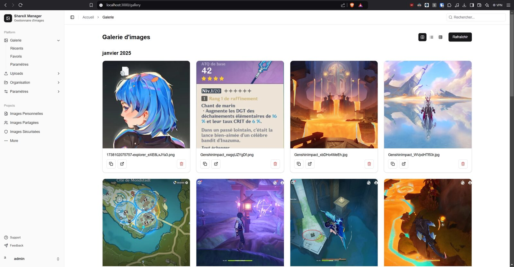
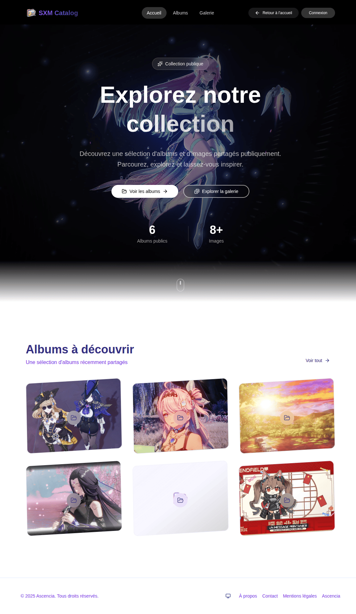
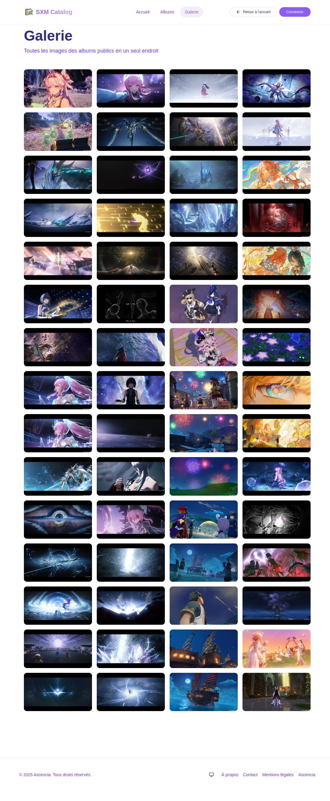
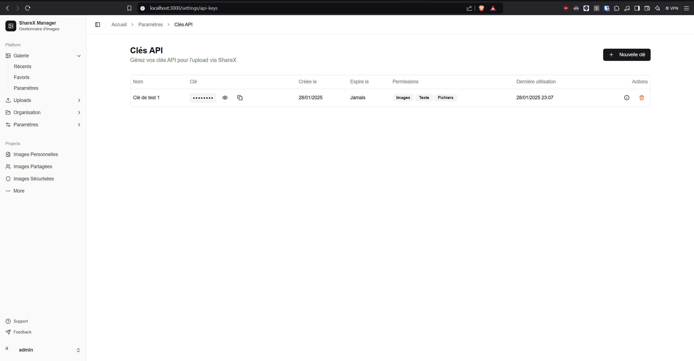
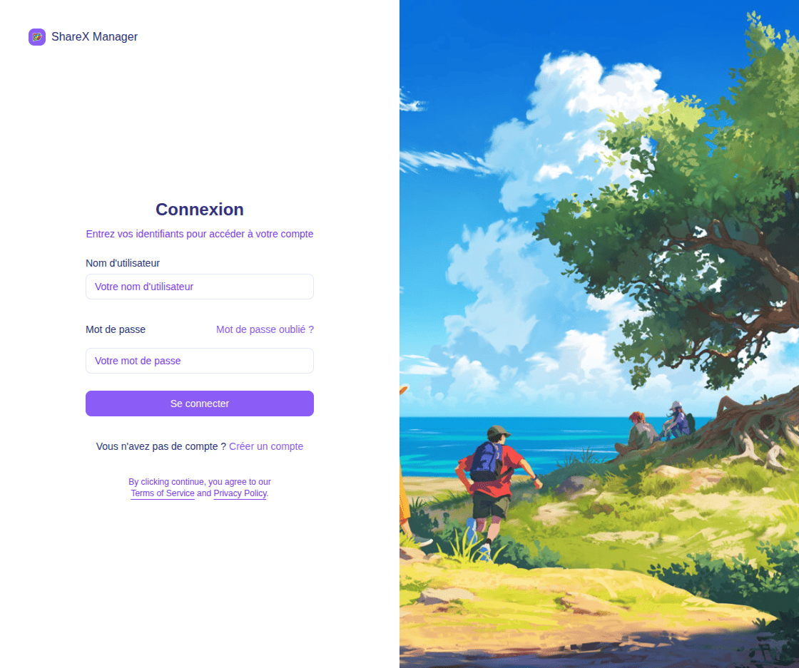
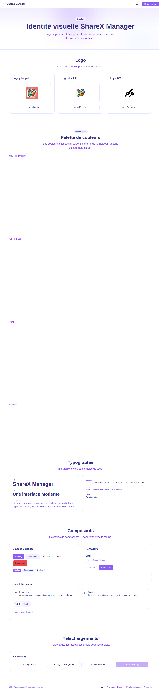

Tout pour gérer vos uploads
Une interface moderne, rapide et configurable, pensée pour votre workflow.
Galerie d'images
Visualisez et gérez tous vos fichiers, avec miniatures, recherche et tri.
Albums & catalogue
Organisez vos images et partagez des albums publics via un catalogue.
Statistiques
Volume, types, distribution des tailles, croissance et géolocalisation.
Clés API
Permissions par clé (images / texte / fichiers) et expiration.
Modules
Plugins de traitement : crop, resize, watermark, génération IA…
Thème clair/sombre
Interface entièrement personnalisable, responsive multi-appareils.
Un aperçu
Pages publiques et interface d'administration.






Uploadez depuis n'importe où
ShareX Manager fonctionne avec tout client compatible .sxcu.
Auto-hébergement en quelques minutes
Le serveur tourne sur Bun, en production via Docker.
# Production (Docker) git clone https://github.com/pedrokarim/sharex-manager.git cd sharex-manager cp .env.example .env # éditez AUTH_SECRET, AUTH_URL, domaines… mkdir -p config data uploads # volumes persistants docker compose up -d --build
Développement : bun install puis bun dev. Créez un admin avec bun cli users. Détails dans la page Installation.
Documentation complète
Le guide pas-à-pas vit dans le wiki du dépôt.